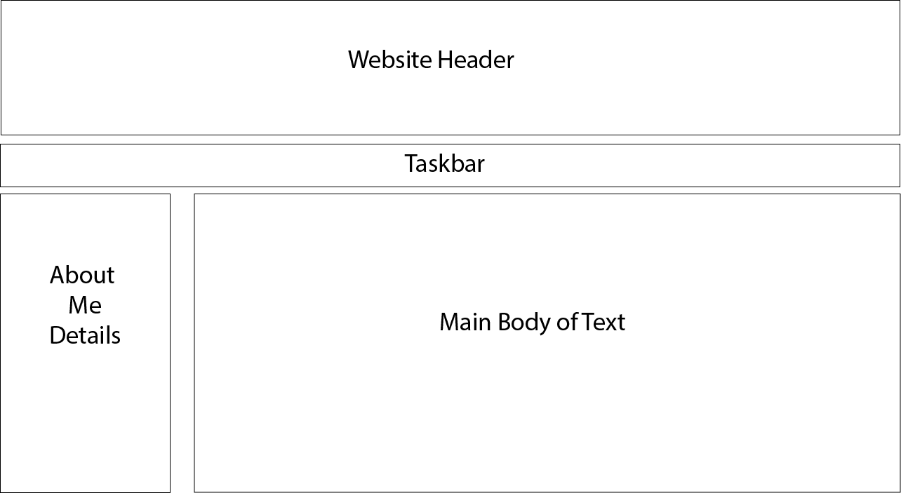

Task 4 / User Experience
Here is the user experience flowchart / wireframe. I had planned out my website to make it easy navigate for anyone who may access my website, that being anyone such as students or any young people who should be able to navigate my website with no problems or misdirections. So what I have included in my website is the four tasks we have been working on through out the previous weeks / months. So how I made my website easy to navigate is mainly using the scroller to navigate the pages or click on the task headers on the task bar below the header. However some pages you may not need to scroll, such as on my Task 3 page I have made a slideshow for my typography posters so it looks a lot more professional and it is easier to click and scroll through the posters.